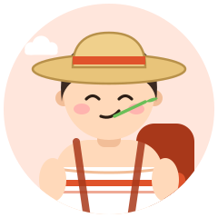
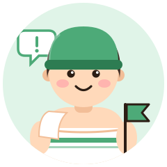

- H高温ガッツリ
- A外気浴派
- Oひとりサウナ
- F気まま・直感
風来坊
The Drifter
熱を浴び、風に吹かれ、また次の町へ
ひとりで熱と向き合う
求道者タイプふらりと入って、ガッツリ温まって、風に吹かれて帰る。自由気ままなひとりサウナの旅人です。
強み
- 自由で軽やか
- どこでも馴染む
- 変化を楽しめる
気をつけたいこと
- その日の体調確認は忘れずに
相性のいいタイプ

初心者にやさしく入り方を教えるお世話役
風のように動く風来坊を、案内人がやさしく迎えてくれる。旅先でも道しるべになってくれる存在。
おすすめのサウナ
旅先の地元サウナ、野外サウナ
- Sauna muku 長野県 茅野市 宿泊・アウトドア
八ヶ岳山麓の薪サウナ薪ストーブのサウナと、野外の陶器の水風呂、小泉山を望む外気浴 公式サイト地図で見る - noSauna 神奈川県 小田原 宿泊・アウトドア
森の中で味わうテントサウナ薪ストーブのテントサウナでセルフロウリュができ、森の中のチェアで外気浴。水風呂の代わりに渓流を使う 公式サイト地図で見る - 宇和パークホテル & 宇和サウナ 愛媛県 西予市 宿泊・アウトドア
樹齢約300年の杉のサウナ醤油樽の水風呂とセルフロウリュ、宇和の空気を感じる外気浴スペースがある 公式サイト地図で見る
※ 営業状況・料金・利用条件は変わることがあります。訪問前に公式情報をご確認ください。
あなたのタイプは？
風来坊は、サウナの好みで分かれる16タイプのひとつです。質問に答えるだけで、あなたの「ととのい方」がわかります（無料・登録不要・約3分）。
ほかのタイプ
※ 娯楽目的の診断です。サウナは体調に合わせて無理せず、水分補給をしてお楽しみください。